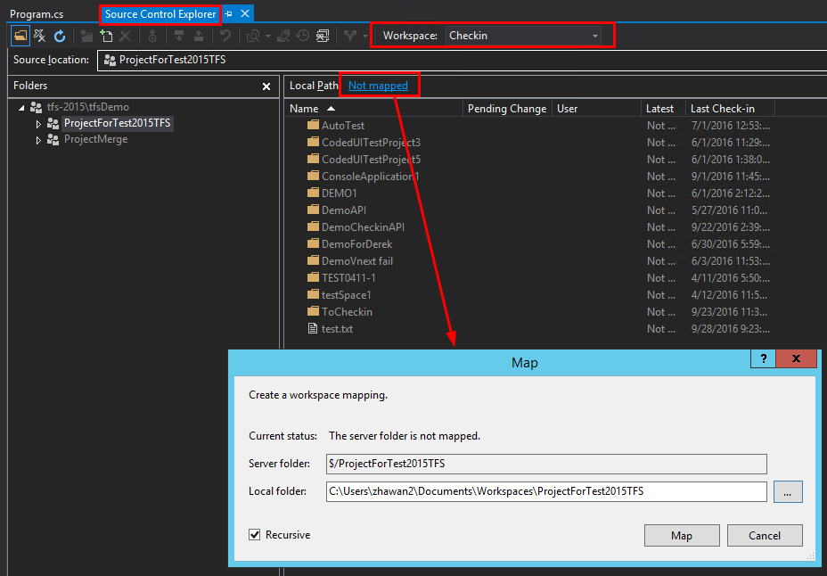
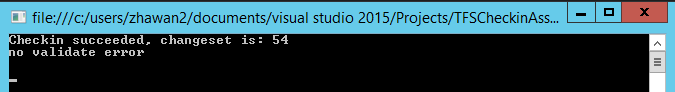
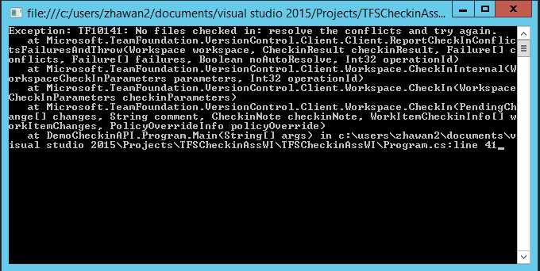

How to checkin source code with work item associated using TFS API
How to check-in source code with work item associated using Team Foundation Server API
Introduction
This example shows how to check-in source code with work item associated using Team Foundation Server API. In this example, it also includes capturing possible exception and work item validate result.
Prerequisites
• Visual Studio 2015, Team Foundation Server 2015
• Add a user to the project team.

• Connect to the Team Project and create a new workspace

• Map the server folder to a local path.

• Check out a file for edit and modify this file in the mapped local path.


Please remember the workspace name and Local path, you will use the information in our project.
Building the Sample
• Open the sample solution in Visual Studio 2015.
• Initial following variables.
• Collection URL
• Workspace name
• Work Item ID that need to be associated
• Comment for check-in
• Local path and name of the file that need to check-in

• Make sure following three assembly have been successfully added.

Running the Sample
Click the “Start” button and begin debugging, you could also add breakpoints.

If Check-in succeeds with work item associated, you could see following information. Also, you could check the changeset and associated work item in TFS web portal.


If exception happened, the exception message and stack trace will be saved in current temp folder. Also, you could directly check them in the console window.


Using the code
static void Main(string[] args)
{
//Collection URL.
string serverurl = "http://tfs-2015:8080/tfs/tfsdemo";
//Workspace name.
string workspaceName = "Checkin";
//ID of Work Item that need to be associated.
int workItemIdLink = 9;
//Comment for check-in
string checkinComment = "DemoCheckin";
//Local path of the file
var localPath = new DirectoryInfo("C:\\Users\\zhawan2\\Documents\\Workspaces\\ProjectForTest2015TFS");
var file = Path.Combine(localPath.FullName, "test.txt");
try
{
TfsTeamProjectCollection tfsCollect = new TfsTeamProjectCollection(TfsTeamProjectCollection.GetFullyQualifiedUriForName(serverurl));
WorkItemStore WIStore = tfsCollect.GetService<WorkItemStore>();
VersionControlServer versionControl = tfsCollect.GetService<VersionControlServer>();
string user = versionControl.AuthorizedUser;
Workspace workSpace = versionControl.GetWorkspace(workspaceName, user);
WorkItem workItem = WIStore.GetWorkItem(workItemIdLink);
var WIChecInInfo = new[]
{
new WorkItemCheckinInfo(workItem, WorkItemCheckinAction.Associate)
};
workSpace.PendEdit(file);
int changesetNo = workSpace.CheckIn(workSpace.GetPendingChanges(), checkinComment, null, WIChecInInfo, null);
if (changesetNo > 0)
{
Console.Write("Checkin succeeded, changeset is: " + changesetNo + "\n");
//validate work item
ArrayList invalidFields = workItem.Validate();
if (invalidFields.Count > 0)
{
foreach (Field field in invalidFields)
{
string fieldStatus = field.Status.ToString();
Console.WriteLine("check-in succeeded, but associating work item failed \n" + fieldStatus);
}
}
else
{
Console.WriteLine("no validate error \n");
}
}
else
{
Console.Write("no pending changes, please press Enter to exit \n");
}
Console.ReadLine();
}
catch (Exception ex)
{
var dir = new DirectoryInfo(Path.Combine(Path.GetTempPath(), "logs"));
if (!dir.Exists)
{
dir.Create();
}
var logFile = Path.Combine(dir.FullName, "log-" + DateTime.Now.ToString("yyyyMMdd-hhmmss") + ".txt");
using (var stream = File.CreateText(logFile))
{
stream.Write("Time: {0}; Exception: {1}", DateTime.Now, ex.Message + "\n" + ex.StackTrace);
}
Console.Write("Exception: " + ex.Message + "\n" + ex.StackTrace);
Console.ReadLine();
}
}
static void Main(string[] args) { //Collection URL. string serverurl = "http://tfs-2015:8080/tfs/tfsdemo"; //Workspace name. string workspaceName = "Checkin"; //ID of Work Item that need to be associated. int workItemIdLink = 9; //Comment for check-in string checkinComment = "DemoCheckin"; //Local path of the file var localPath = new DirectoryInfo("C:\\Users\\zhawan2\\Documents\\Workspaces\\ProjectForTest2015TFS"); var file = Path.Combine(localPath.FullName, "test.txt"); try { TfsTeamProjectCollection tfsCollect = new TfsTeamProjectCollection(TfsTeamProjectCollection.GetFullyQualifiedUriForName(serverurl)); WorkItemStore WIStore = tfsCollect.GetService<WorkItemStore>(); VersionControlServer versionControl = tfsCollect.GetService<VersionControlServer>(); string user = versionControl.AuthorizedUser; Workspace workSpace = versionControl.GetWorkspace(workspaceName, user); WorkItem workItem = WIStore.GetWorkItem(workItemIdLink); var WIChecInInfo = new[] { new WorkItemCheckinInfo(workItem, WorkItemCheckinAction.Associate) }; workSpace.PendEdit(file); int changesetNo = workSpace.CheckIn(workSpace.GetPendingChanges(), checkinComment, null, WIChecInInfo, null); if (changesetNo > 0) { Console.Write("Checkin succeeded, changeset is: " + changesetNo + "\n"); //validate work item ArrayList invalidFields = workItem.Validate(); if (invalidFields.Count > 0) { foreach (Field field in invalidFields) { string fieldStatus = field.Status.ToString(); Console.WriteLine("check-in succeeded, but associating work item failed \n" + fieldStatus); } } else { Console.WriteLine("no validate error \n"); } } else { Console.Write("no pending changes, please press Enter to exit \n"); } Console.ReadLine(); } catch (Exception ex) { var dir = new DirectoryInfo(Path.Combine(Path.GetTempPath(), "logs")); if (!dir.Exists) { dir.Create(); } var logFile = Path.Combine(dir.FullName, "log-" + DateTime.Now.ToString("yyyyMMdd-hhmmss") + ".txt"); using (var stream = File.CreateText(logFile)) { stream.Write("Time: {0}; Exception: {1}", DateTime.Now, ex.Message + "\n" + ex.StackTrace); } Console.Write("Exception: " + ex.Message + "\n" + ex.StackTrace); Console.ReadLine(); } }
Microsoft All-In-One Code Framework is a free, centralized code sample library driven by developers' real-world pains and needs. The goal is to provide customer-driven code samples for all Microsoft development technologies, and reduce developers' efforts in solving typical programming tasks. Our team listens to developers’ pains in the MSDN forums, social media and various DEV communities. We write code samples based on developers’ frequently asked programming tasks, and allow developers to download them with a short sample publishing cycle. Additionally, we offer a free code sample request service. It is a proactive way for our developer community to obtain code samples directly from Microsoft.